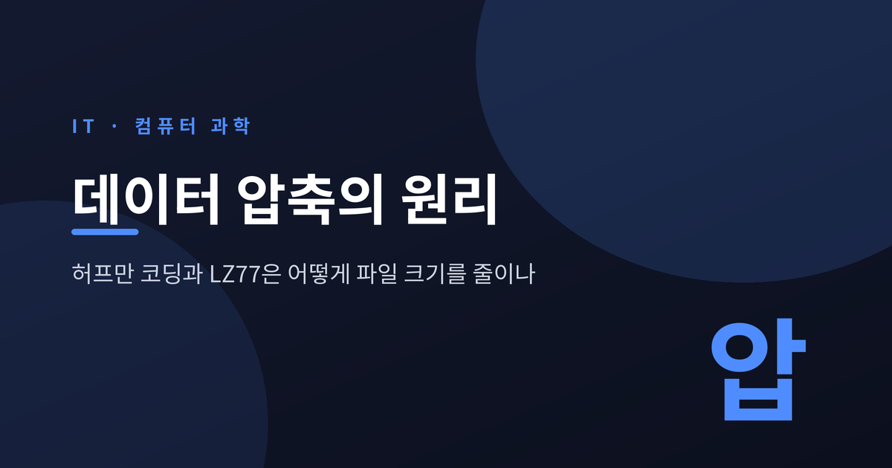
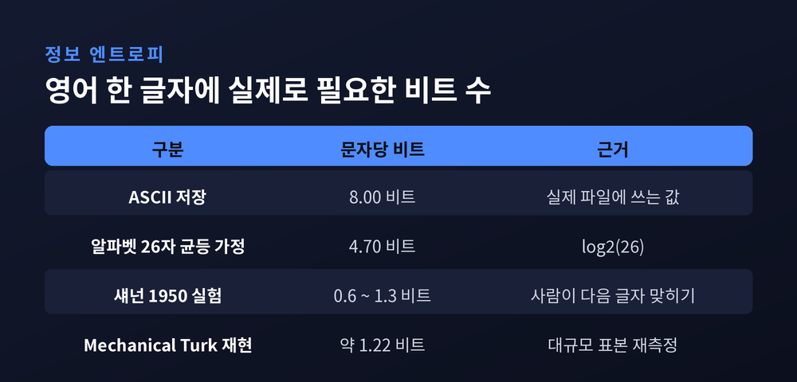
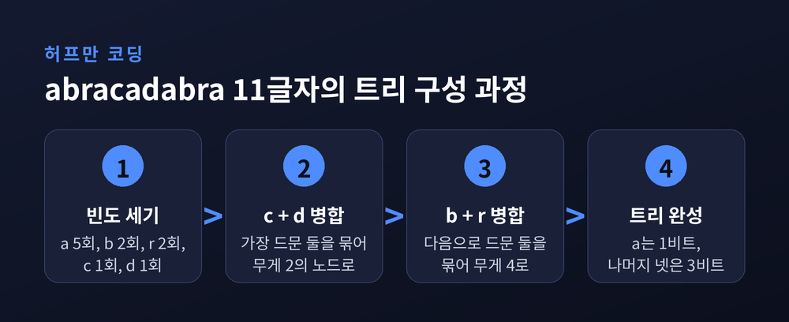
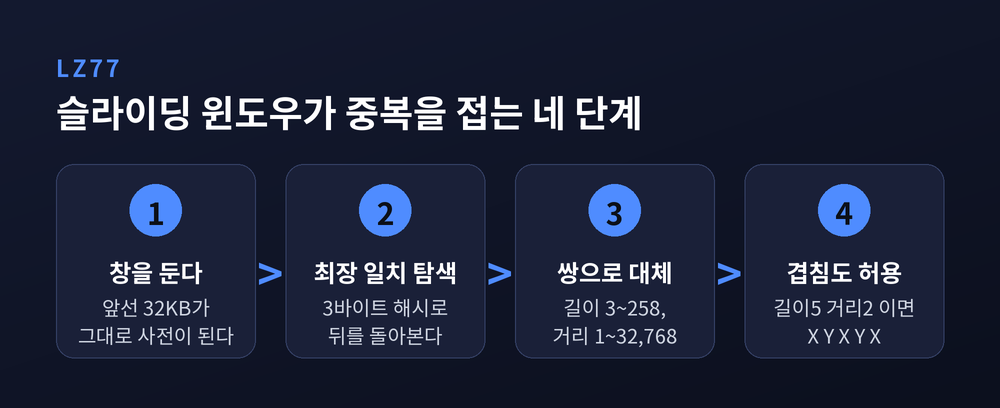
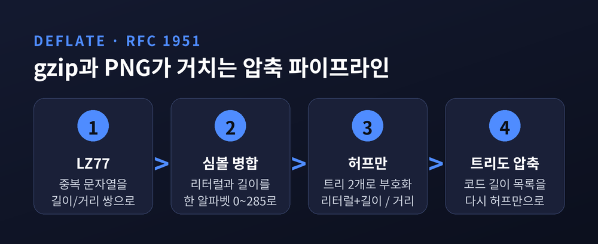
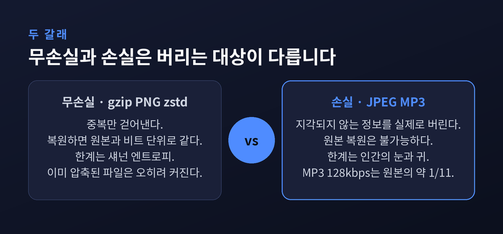
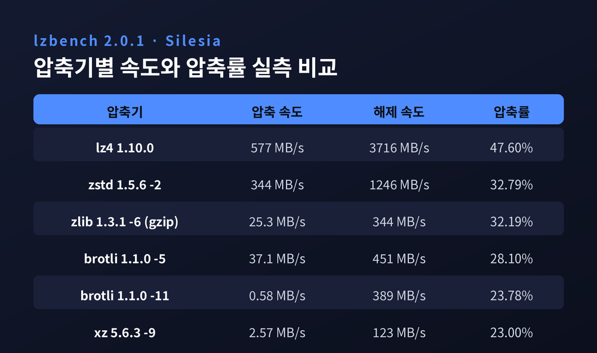

이번 글에서는 파일 압축이 실제로 어떤 계산을 거쳐 크기를 줄이는지 정리해 보겠습니다. 압축의 이론적 한계부터 허프만 코딩과 LZ77의 동작 방식, 둘을 합친 DEFLATE, 그리고 zstd와 brotli 같은 현대 압축기까지 순서대로 살펴보겠습니다.
먼저 결론부터 말씀드립니다. 압축은 데이터를 마법처럼 줄이는 기술이 아닙니다. 같은 내용을 두 번 적지 않는 기술입니다. 자주 나오는 것에는 짧은 이름을, 이미 나온 것에는 "아까 그것"이라는 표시를 붙입니다. 나머지 이야기는 이 두 문장에서 거의 다 따라 나옵니다.
압축을 이야기하려면 먼저 한계를 알아야 합니다.
섀넌의 소스 코딩 정리는 그 한계를 수식 하나로 못 박아 두었습니다. 심볼당 평균 비트 수를 소스의 엔트로피보다 작게 만드는 것은 불가능합니다. 엔트로피는 이렇게 계산합니다.
이 값보다 작게 만들 수 없다는 것은 오늘날 알고리즘의 성능 문제가 아닙니다. 수학적 불가능입니다. 다만 이 한계에 임의로 가깝게 다가가는 것은 가능합니다. 압축 알고리즘의 역사는 사실상 이 한 줄에 얼마나 붙느냐의 역사였습니다.

숫자로 보면 여지가 얼마나 큰지 드러납니다. 영어 알파벳 26자를 모두 같은 확률로 가정하면 문자당 log₂26, 약 4.7비트가 필요합니다. 그런데 섀넌이 1950년에 사람에게 다음 글자를 맞히게 한 실험에서 나온 실제 엔트로피는 문자당 0.6에서 1.3비트 사이였습니다. 최근 Amazon Mechanical Turk로 표본을 크게 늘려 재현한 연구는 약 1.22비트를 제시했습니다.
우리가 영어를 ASCII 8비트로 저장한다는 사실을 떠올려 보시면 계산이 간단해집니다. 문자 하나마다 6비트 넘게 낭비하고 있는 셈입니다.
물론 공짜는 없습니다. RFC 1951은 첫머리에서 "단순한 계수 논증만으로도 어떤 무손실 압축 알고리즘도 가능한 모든 입력을 압축할 수는 없음이 드러난다"고 적었습니다. 이미 압축된 파일을 다시 압축하면 오히려 커집니다. 그래서 DEFLATE는 최악의 팽창을 32K 블록당 5바이트, 큰 파일 기준 0.015%로 묶어 두는 설계를 택했습니다.
David Huffman이 1952년에 발표한 방법입니다. 당시 MIT 박사과정 학생이었고, 결과적으로 섀넌과 함께 유사한 부호를 연구하던 지도교수를 앞질렀습니다. 그때까지 쓰이던 섀넌-파노 부호는 트리를 위에서 아래로 쪼개 최적을 보장하지 못했습니다. 허프만은 방향을 뒤집어 아래에서 위로 병합했습니다. 그 한 번의 방향 전환으로 최적성이 증명되었습니다.
동작은 세 줄이면 끝납니다.
실제로 계산해 보겠습니다. abracadabra라는 11글자를 압축한다고 하겠습니다. 빈도는 a가 5회, b와 r이 각 2회, c와 d가 각 1회입니다.

가장 드문 c와 d를 묶어 2를 만듭니다. 다음으로 b와 r을 묶어 4를 만듭니다. 그 둘을 합쳐 6, 마지막으로 a와 합쳐 11이 되면 트리가 완성됩니다.
결과 코드 길이는 이렇습니다. a는 1비트, 나머지 넷은 각 3비트입니다.
| 항목 | 비트 수 | 비교 |
|---|---|---|
| 원본 ASCII 8비트 | 88비트 | 기준 |
| 5종 고정 길이 3비트 | 33비트 | 원본의 37.5% |
| 허프만 부호 | 23비트 | 원본의 26.1% |
| 이론적 엔트로피 한계 | 22.44비트 | 도달 불가 하한 |
원본 대비 3.8배로 줄었습니다. 고정 길이 부호와 비교해도 30% 더 작습니다.
여기서 눈여겨볼 지점은 마지막 줄입니다. 허프만이 만든 23비트는 이론적 하한 22.44비트에 0.56비트 차이로 붙어 있습니다. 아주 가깝지만 닿지는 못했습니다.
이 0.56비트의 정체가 허프만의 구조적 한계입니다.
허프만은 각 심볼이 1비트, 2비트처럼 자연수 개의 비트로 표현된다는 가정 아래에서만 최적입니다. 뒤집어 말하면 아무리 흔한 심볼이라도 최소 1비트는 써야 합니다. zstd를 만든 Yann Collet은 이 제약 때문에 "높은 압축률에 도달하는 것이 불가능하다"고 표현했습니다.
대안은 오래전부터 알려져 있었습니다. 산술 부호화는 섀넌 한계인 -log₂(P)에 임의로 가깝게 접근하며 심볼당 분수 비트를 씁니다. 다만 CPU를 많이 먹고, 특히 압축 해제 쪽에서 나눗셈이 필요해 느립니다.
예전엔 이 둘 중 하나를 골라야 했습니다. 지금은 FSE(Finite State Entropy)라는 세 번째 길이 있습니다. Jarek Duda의 ANS 이론에 기반해 부호화 단계를 테이블에 미리 계산해 두는 방식입니다. 산술 부호화만큼 정밀하면서 덧셈과 테이블 조회, 시프트만 씁니다. 복잡도는 허프만 수준입니다. zstd가 채택한 것이 바로 이것입니다.
허프만이 글자 하나하나의 길이를 줄인다면, LZ77은 아예 문장 단위를 지웁니다.
1977년 Jacob Ziv와 Abraham Lempel이 IEEE Transactions on Information Theory에 발표한 방법입니다. 확률 분포를 미리 알 필요가 없다는 점에서 '범용(universal)'이라는 이름이 붙었습니다.
원리는 슬라이딩 윈도우입니다. 현재 위치 바로 앞에 일정 폭의 창을 상상합니다. 창은 읽는 위치를 따라 함께 미끄러지고, 그 안의 내용이 사전 역할을 합니다.

반복되는 문자열은 숫자 두 개로 대체됩니다. 거리는 얼마나 뒤로 가야 그 문자열이 시작되는지, 길이는 몇 바이트가 같은지를 뜻합니다. DEFLATE 기준으로 창의 크기는 32,768바이트입니다. 압축기와 해제기가 직전 32KB의 기록을 나란히 들고 있는 셈입니다.
영리한 지점이 하나 더 있습니다. 참조 구간이 현재 위치와 겹쳐도 됩니다. RFC 1951은 예시까지 적어 두었습니다. 마지막에 디코딩된 2바이트가 X, Y일 때 <길이=5, 거리=2>는 출력에 X,Y,X,Y,X를 추가합니다.
이 성질 덕분에 반복 패턴이 통째로 접힙니다. ABCABCABCABC 12바이트는 리터럴 A, B, C 세 개와 <길이=9, 거리=3> 쌍 하나로 끝납니다. 길이/거리 쌍 하나가 런 렝스 인코딩 역할까지 대신하는 것입니다.
여기까지 오면 조합은 자연스럽습니다. LZ77로 중복 문자열을 걷어낸 뒤, 그 결과물을 허프만으로 다시 줄이면 됩니다. 그것이 DEFLATE입니다.
형식은 Phil Katz가 1991년 PKZIP에서 설계했고, Jean-loup Gailly와 Mark Adler가 소프트웨어로 구현했습니다. 명세는 1996년 5월 RFC 1951로 문서화되었습니다. 지금 우리가 쓰는 gzip, zlib, ZIP, PNG가 모두 이 한 형식 위에 서 있습니다.

구조를 숫자로 정리하면 이렇습니다.
| 요소 | 규격 | 비고 |
|---|---|---|
| 슬라이딩 윈도우 | 32,768바이트 | 거리 범위 1~32,768 |
| 일치 길이 | 3~258바이트 | 최소 3바이트부터 대체 |
| 리터럴/길이 알파벳 | 0~285 | 256은 블록 끝 표시 |
| 거리 알파벳 | 0~29 | 추가 비트와 조합 |
| 허프만 트리 | 2개 | 리터럴+길이 / 거리 |
| 최악 팽창률 | 0.015% | 32K 블록당 5바이트 |
주목할 만한 설계가 몇 가지 있습니다.
첫째, 리터럴과 길이를 한 트리에 합쳐 넣었습니다. 값 0부터 255는 리터럴 바이트, 256은 블록의 끝, 257부터 285는 길이 코드입니다. 덕분에 디코더는 심볼 하나를 읽고 나서야 그것이 글자인지 되돌아가라는 지시인지 알게 됩니다.
둘째, 트리 자체도 압축합니다. DEFLATE는 정준 허프만 규칙을 씁니다. 같은 길이의 코드는 사전순으로 연속하고, 짧은 코드가 긴 코드보다 앞섭니다. 이 규칙 하나로 코드 길이 목록만 보내면 코드 전체가 복원됩니다. 그리고 그 길이 목록마저 다시 허프만으로 압축해 블록 앞에 붙입니다.
셋째, 문자열 탐색에 3바이트 해시 체인을 씁니다. 다음 3바이트의 해시 체인이 비어 있으면 첫 글자를 리터럴로 흘려보내고, 비어 있지 않으면 체인을 따라가며 최장 일치를 찾습니다. 이때 최근 문자열부터 뒤지는데, 작은 거리를 선호해야 뒤에 올 허프만 부호화가 유리해지기 때문입니다.
넷째, 게으른 일치(lazy matching)가 있습니다. 길이 N의 일치를 찾아도 바로 쓰지 않고, 한 칸 옆에서 더 긴 일치가 나오는지 확인합니다. 더 길면 앞의 일치를 리터럴 하나로 잘라내고 긴 쪽을 씁니다. 압축률과 속도의 조절 손잡이가 바로 이 부분입니다.
성능은 어떨까요. RFC 1951은 담담하게 적어 두었습니다. "영어 텍스트는 보통 2.5에서 3배로 압축된다. 실행 파일은 대체로 그보다 덜하고, 래스터 이미지는 훨씬 많이 압축될 수 있다."
30년 뒤의 실측도 이 서술을 벗어나지 않습니다. Silesia 코퍼스 211,947,520바이트를 zlib -6으로 압축하면 68,228,431바이트, 약 3.1배입니다.
DEFLATE가 얼마나 잘 쓰이느냐에 따라 결과가 달라진다는 사실을 PNG가 잘 보여줍니다.
PNG는 압축 전에 필터링이라는 전처리를 넣습니다. 데이터를 가역적으로 바꿔 압축 엔진이 일하기 좋게 만드는 단계입니다. 방식은 다섯 가지입니다. 아무것도 하지 않거나(None), 왼쪽 바이트와의 차를 저장하거나(Sub), 위 행과의 차를 쓰거나(Up), 둘의 평균과 비교하거나(Average), Alan Paeth가 고안한 예측값을 씁니다(Paeth). 인코더는 행마다 다른 필터를 고를 수 있습니다.
효과를 보여주는 유명한 사례가 16million.png입니다. 1,600만 가지 색을 한 픽셀씩 담은 512 × 32,768 크기의 24비트 이미지입니다.
같은 압축 엔진인데 결과가 300배 넘게 벌어졌습니다. 원본 대비로는 434배입니다. 픽셀이 한 칸씩 규칙적으로 증가하는 데이터는 그 자체로는 전혀 반복되지 않지만, 이웃과의 차를 저장하는 순간 같은 값이 끝없이 이어지는 데이터로 바뀝니다.
압축 알고리즘을 바꾸는 것보다 데이터를 먼저 손질하는 쪽이 이득이 큰 경우가 있다는 뜻입니다.
지금까지 이야기한 것은 전부 무손실 압축입니다. 중복만 걷어내므로 복원하면 원본과 비트 단위로 같습니다.

JPEG는 다른 길을 갑니다. 각 채널을 겹치지 않는 8×8 블록으로 자르고 이산 코사인 변환으로 주파수 영역에 옮깁니다. 그러면 64개의 계수가 나옵니다. 여기에 부대역별 값으로 나누고 반올림하는 양자화를 적용하는데, 저주파는 정확도를 지키고 고주파는 거칠게 뭉갭니다. 색차 평면은 해상도를 아예 줄입니다. 사람 눈이 밝기보다 색 변화에 둔감하기 때문입니다.
흥미로운 것은 JPEG 파이프라인에서 정보가 실제로 사라지는 단계는 양자화와 서브샘플링 둘뿐이라는 사실입니다. 마지막 엔트로피 부호화는 무손실입니다.
MP3는 귀를 겨냥합니다. 심리음향 모델이 사람의 청각이 20Hz에서 20kHz까지, 음압 120dB까지 균일하게 반응하지 않는다는 사실을 이용합니다. 큰 소리가 인접 주파수의 작은 소리를 덮어버리는 동시 마스킹 현상을 계산해, 어차피 들리지 않을 성분에는 비트를 배정하지 않습니다. 128kbps로 인코딩하면 원본 PCM의 약 1/11 크기가 됩니다.
다만 "손실이 항상 더 작다"는 말은 사실이 아닙니다. PNG 공식 서적의 실측에 그 반례가 있습니다. 128 × 128 그레이스케일 이미지 linoleum1은 손실 압축인 JPEG가 10,956바이트인데, 최적화한 무손실 PNG는 6,753바이트였습니다. 이유는 세 가지입니다. PNG는 픽셀당 1바이트라 자동으로 3배 이득을 얻고, JPEG는 압축 이득의 대부분이 색 성분 처리에서 나오므로 그레이스케일에 불리하며, 이 이미지가 자연 사진이 아니라 경계가 뚜렷한 인공적 그림이었기 때문입니다.
DEFLATE는 훌륭했지만 1990년대 초의 제약을 안고 있습니다. 32KB 창은 그 시절엔 합리적인 선택이었습니다.
Meta가 2016년에 공개한 Zstandard는 그 제약을 걷어냈습니다. 엔트로피 단계에 FSE를 쓰고, 데이터를 여러 스트림으로 나눠 현대 CPU가 병렬로 처리하게 했으며, 분기 예측 실패로 인한 파이프라인 플러시를 피하도록 분기 없는 설계를 택했습니다. 압축 레벨은 zlib의 9단계에서 22단계로 늘었습니다.
Brotli는 다른 곳을 파고들었습니다. LZ77과 허프만이라는 토대는 gzip과 같지만, 정적 사전을 내장하고 창을 최대 16MB까지 키웠으며 문맥 모델링을 확장했습니다.
LZ4는 반대 방향입니다. 압축률을 상당히 포기하는 대신 속도만 취합니다.
숫자로 보면 각자의 자리가 분명해집니다. 아래는 lzbench 2.0.1이 AMD EPYC 9554 단일 스레드에서 Silesia 코퍼스로 측정한 결과입니다.

| 압축기 | 압축 속도 | 해제 속도 | 압축률 |
|---|---|---|---|
| lz4 1.10.0 | 577 MB/s | 3716 MB/s | 47.60% |
| zstd 1.5.6 -1 | 422 MB/s | 1347 MB/s | 34.64% |
| zstd 1.5.6 -2 | 344 MB/s | 1246 MB/s | 32.79% |
| zlib 1.3.1 -6 (gzip 기본) | 25.3 MB/s | 344 MB/s | 32.19% |
| brotli 1.1.0 -5 | 37.1 MB/s | 451 MB/s | 28.10% |
| zstd 1.5.6 -11 | 34.4 MB/s | 1332 MB/s | 27.49% |
| brotli 1.1.0 -11 | 0.58 MB/s | 389 MB/s | 23.78% |
| xz 5.6.3 -9 | 2.57 MB/s | 123 MB/s | 23.00% |
읽는 방법을 몇 가지 짚어 보겠습니다.
zstd -2와 zlib -6을 나란히 보십시오. 압축률은 32.79% 대 32.19%로 사실상 같습니다. 그런데 압축 속도는 344MB/s 대 25.3MB/s, 13.6배 차이입니다. 해제 속도도 3.6배 벌어집니다. Meta는 2016년 발표 당시 "같은 압축률에서 3~5배 빠르다"고 밝혔는데, 최신 하드웨어의 측정치는 그보다 훨씬 큽니다.
lz4는 압축률을 47.6%에 두는 대신 해제 속도가 3716MB/s입니다. zlib의 10.8배입니다. 실시간으로 읽고 쓰는 스토리지에 LZ4가 자리 잡은 이유가 여기 있습니다.
brotli -11은 정반대 극단입니다. 23.78%까지 줄이지만 압축 속도가 0.58MB/s, zlib -6의 43분의 1입니다. 이 숫자는 brotli 최고 품질이 어떤 용도인지를 그대로 말해 줍니다. 한 번 압축해 수없이 배포하는 정적 자산입니다.
실제 사례가 있습니다. Dropbox는 2017년 정적 콘텐츠를 미리 brotli로 압축해 배포했고, CDN에서 사용자가 내려받는 페이로드가 평균 20% 줄었습니다. CSS는 20~30%, 압축 전 JavaScript는 20~25%, 키릴·아시아 언어팩은 최대 31%까지 개선되었습니다. 웹 서버 CPU 사용량도 15% 정도 내려갔습니다.
zstd의 사전 압축도 인상적입니다. GitHub 사용자 JSON 1,000건, 약 850KB를 개별 압축하면 300KB 남짓입니다. 그런데 zstd --train으로 65,599바이트짜리 사전을 한 번 만들어 적용하면 122KB가 됩니다. 압축률이 2.8배에서 6.9배로 뜁니다. 작은 파일은 참조할 과거가 없어 불리한데, 사전이 그 과거를 미리 빌려주는 셈입니다.
균형을 위해 한계도 적어 두겠습니다.
첫째, 압축률 개선이 곧 성능 개선은 아닙니다. Dropbox는 이 점을 명시적으로 보고했습니다. 정적 자산이 20% 작아졌지만 p90 TTI 개선은 미미했습니다. 클라이언트 캐싱이 잘 작동했고, CDN이 이미 충분히 빨랐으며, 무엇보다 현대 웹의 병목이 네트워크가 아니라 자바스크립트를 파싱하고 실행하는 CPU였기 때문입니다.
둘째, 작은 데이터에는 약합니다. 압축은 과거를 보고 미래를 예측하는 일인데, 수백 바이트짜리 JSON에는 참조할 과거가 거의 없습니다. 사전 압축이 나온 이유입니다.
셋째, 모든 데이터를 줄일 수는 없습니다. 계수 논증이 그것을 보장합니다. 이미 압축된 파일, 암호화된 데이터, 난수는 오히려 커집니다.
넷째, 최고 압축률과 실용성은 다른 축입니다. xz -9는 23.00%까지 줄이지만 해제 속도가 123MB/s로 zstd의 10분의 1 수준입니다. 어떤 파일은 압축될 때보다 풀릴 때가 훨씬 많습니다.
정리하면 이렇습니다.
허프만은 자주 나오는 것에 짧은 이름을 붙였고, LZ77은 이미 나온 것을 다시 적지 않기로 했습니다. DEFLATE는 그 둘을 겹쳐 쌓아 30년을 버텼습니다. zstd와 brotli는 새 원리를 발명했다기보다, 같은 아이디어를 현대 CPU와 현대 메모리 위에서 다시 구현한 쪽에 가깝습니다.
"압축은 데이터를 줄이는 기술이 아니라, 같은 말을 두 번 하지 않는 기술입니다."
지금 이 문장을 읽고 계신 웹페이지도 서버에서 한 번 접혔다가 브라우저에서 다시 펼쳐진 것입니다. 우리가 아무것도 눈치채지 못하는 사이에 말입니다.